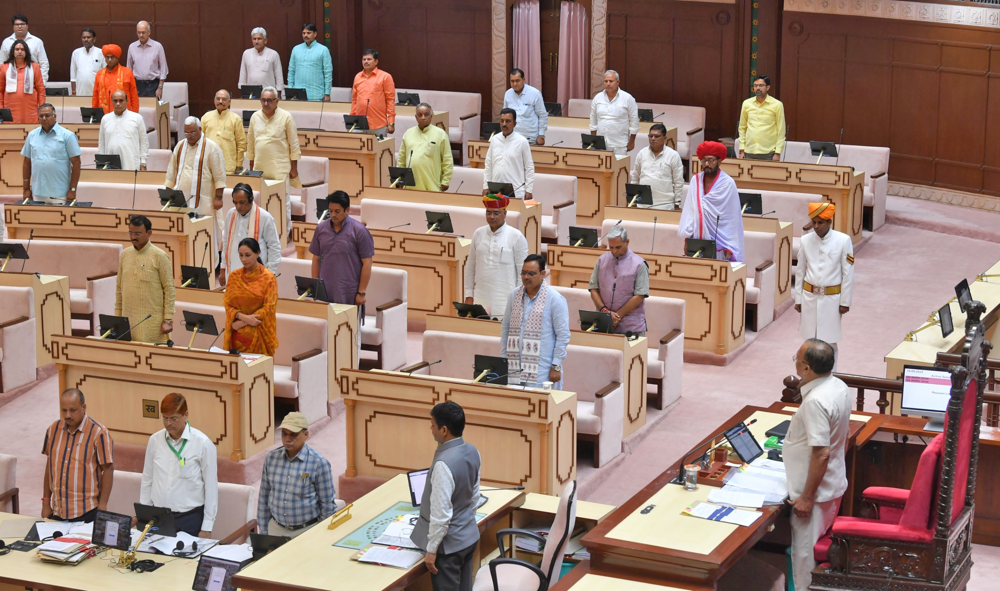
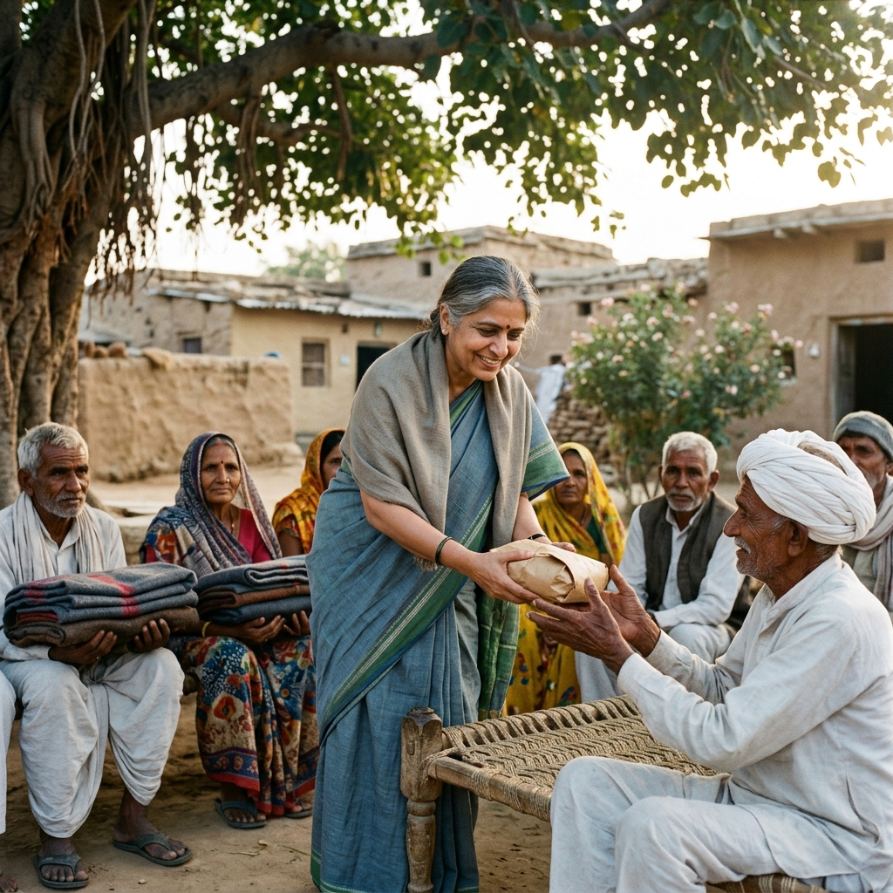

स्मृतियां
कार्य और गतिविधियां



श्री चंद्रभान सिंह आक्या एक लोक-प्रिय और कर्मठ नेता हैं, जो पिछले कई वर्षों से चित्तौड़गढ़ के विकास और जन-कल्याण के लिए निरंतर प्रयासरत हैं। जमीनी स्तर से उठकर विधायक के पद तक का उनका यह सफर जनता के विश्वास और अटूट प्रेम का परिणाम है।
उनका मानना है कि राजनीति केवल सत्ता का माध्यम नहीं, बल्कि समाज के अंतिम व्यक्ति तक विकास पहुँचाने का साधन है। "सबका साथ, सबका विकास" के मूल मंत्र के साथ वे विधानसभा क्षेत्र के चहुंमुखी विकास के लिए संकल्पित हैं।
हर सुख-दुख में जनता के बीच उपस्थित रहने वाले नेता।
शिक्षा, स्वास्थ्य और सड़क जैसे बुनियादी ढांचों पर विशेष ध्यान।
"चंद्रभान जी एक कर्मठ कार्यकर्ता हैं जिन्होंने चित्तौड़गढ़ की जनता के लिए हमेशा निस्वार्थ भाव से कार्य किया है।"
"उनकी विकासोन्मुख सोच ही चित्तौड़गढ़ को प्रगति के नए रास्तों पर ले जा रही है।"
विधानसभा क्षेत्र में सड़कों का जाल बिछाया गया है, जिससे ग्रामीण अंचलों का शहर से संपर्क सुदृढ़ हुआ है।
सरकारी विद्यालयों का नवीनीकरण और नए शैक्षणिक संस्थानों की स्थापना सुनिश्चित की गई है।
चिकित्सा केंद्रों की सुविधाओं में सुधार और आमजन को बेहतर स्वास्थ्य लाभ दिलाने के लिए निरंतर प्रयास।
विधायक आक्या ने विभिन्न विकास कार्यों का शिलान्यास किया...
आगे पढ़ें →नये स्कूलों के निर्माण और पुराने भवनों की मरम्मत कार्य प्रारंभ...
आगे पढ़ें →विकास कार्य पूरे
लाभांवित परिवार
जनता के लिए उपलब्ध
जन सुनवाई कार्यक्रम


पुनः चित्तौड़गढ़ विधानसभा से जन-आशीर्वाद के साथ विजयी।
दूसरी बार क्षेत्र में भारी विकास कार्यों के साथ चुनावी सफलता।
प्रथम बार चित्तौड़गढ़ के प्रतिनिधि के रूप में विधानसभा में प्रवेश।
"मेरा विजन चित्तौड़गढ़ को राजस्थान का सबसे अग्रणी और विकसित विधानसभा क्षेत्र बनाना है। शिक्षा में आधुनिकता, स्वास्थ्य सेवाओं में सुलभता और स्वरोजगार के अवसरों का सृजन मेरी प्राथमिकता है। हम एक ऐसा चित्तौड़गढ़ बनाएंगे जहाँ हर नागरिक गौरव के साथ जिए और विकास की धारा में भागीदार बने।"
- चंद्रभान सिंह आक्या (3rd Term MLA)